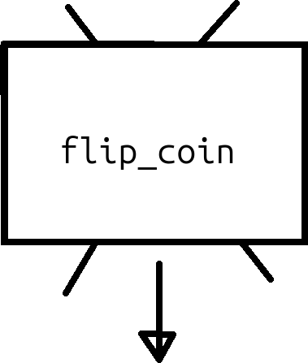
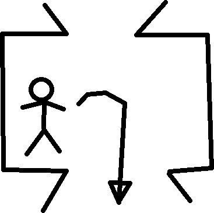

35. Funktioner 3¶
Funktioner hjälper en programmerare att uttrycka sina tankar bättre: istället av att göra samma beräkning hela tiden, kan du göra detta på ett ställe.
35.1. En simulation¶
Vi vill skriva den följande kod:
int n_heads = 0;
int n_tails = 0;
void setup() {}
void draw()
{
if (flip_coin() == CoinSide.HEADS)
{
++n_heads;
}
else
{
++n_tails;
}
println("n_heads: ", n_heads, "n_tails: ", n_tails);
}
Vad trot att den gör? Kan du redan ser vad blir felmeldningen?
35.1. Svar¶
Det är en slantsingling-simulator!
n_headsochn_tailsräknar hur ofta det var krona eller klave. Datatyp av båda är enint: ett heltal. Det stämmer, för att vi kan säga 'vi fick krona två gånger', och det är konstigt att säga 'vi fick klave ett-och-halv gånger'.setupfunktion är tomt. Det är okej: vi behöver ej att rita sakerflip_coinär ett funktion som gör slantsinglingenCoinSide.HEADSär ett värde av en uppräkning för sidorna av en mynt.++n_headsär en förkortning avn_heads = n_heads + 1. Vi läser++n_headspå svenska som 'ökan_headsmed en', eller bara 'ökan_heads'.printlnvisar sig att kunna göra fler argument! Det är fint: vi bara gerprintlnfyra argument här av två olika datatype och 'den bara funkar'.printlnär kanon!
35.2. En funktion med en returnvärde¶
Här har vi koden som saknas:
enum CoinSide { HEADS, TAILS };
CoinSide flip_coin()
{
if (random(2) < 1.0)
{
return CoinSide.HEADS;
}
return CoinSide.TAILS;
}
Raden CoinSide flip_coin() läser man som 'flip_coin är ett funktion
som behöver inga ingångsvärder (pga ())
och ger returvärde av datatyp CoinSide'.
Rad if (random(2) < 1.0) läsas som 'om en slumpmässigt valt
bråktal mellan noll och två är mindre än ett, ...'.
I hälften av fall blir detta sant och ger funktionen en returvärd av krona.
Om inte (också i hälften av fall),
ger funktionen en returvärd av klave.
Får koden att funkar. Stämmer den?
35.2. Svar¶
Ja, koden stämmer, även om sifforna är inte alltid exact samma. Det är på grund av slump. Man kan använda statistik för att beräkna om att mängerna är slump eller inte. I våran fall antar vi att datorn är ärligt.
Nu vi har skapat en funktion med en returvärde, kan vi kolla hur det ser ut i en cartoon utifrån:

Utifrån är vår funktion bara en låda som producerar returvärder.
Här mår gubben inne i funktionen:

Gubben inte kollar uppåt längre: det finns inga ingångsargument här. Gubben bara kasta ur saker till utgångshålen nere.
35.3. Varför koden är så långsamt¶
Kör koden och räknas hör snabbt den går. Hur mycket mynt blir uppkastade verja sekund? Hur mycket beräkningar kann en dator göra? Vad gissar du att orsaka skillnaden?
35.3. Svar¶
Du får några tusen mynta uppkastade varje minut.
En dator kan göra milliarder beräkningar varje minut.
Skillnaden är inte beräkningen:
skillnaden är orsakad av println: att skriva ut värd är långsamt.
35.4. Att göra koden snabbare¶
För att göra koden snabbare, ska vi skapar en nytt funktion, kallad
simulate_coin_flips. Den har en ingångsargument kallad n_coin_flips,
som bestämmer hör mycket mynt blir kastade. Funktionen har en int
som returnvärde som innehåller hur ofta krona blev kastad.
Skriv koden av flip_n_coins. Kanske du bor kolla upp igen
hur man använder en for slinga.
35.4. Svar¶
Här är en möjlighet:
int flip_n_coins(final int n_coin_flips)
{
int n_heads = 0;
for (int i = 0; i != n_coin_flips; ++i)
{
if (flip_coin() == CoinSide.HEADS)
{
++n_heads;
}
}
return n_heads;
}
int flip_n_coins(final int n_coin_flips)läser man som: 'flip_n_coinsär en funktion som behöver ingångsargumentetn_coin_flipsoch har enintsom returvärde, varavn_coin_flipsär en heltal som kan inte blir ändrat i funktionen'.int n_heads = 0är för att skapa en lokal variabel som hetern_heads, är en heltal och har startvärde noll.- Den
for (int i = 0; i != n_coin_flips; ++i)är den mest standardforslinga som finns. Dem läsas som: 'Räknar uppifrån noll till (och exclusive)n_coin_flips'. Den!=betyer 'är olika'.
35.5. Slutuppgift¶
Nu ska vi göra färdigt vår simulation av en slantsingling:
- Använder
flip_n_coinsbara en gång men kastar en miljon mynt - Visar hur ofta programmat fick krona och klave med
printlnbara en gång
35.6. Bonus¶
Om du vill ser om myntet är ärligt, här är statistik koden:
boolean is_coin_fair(final int n_heads, final int n_tails) {
final int n = n_heads + n_tails;
final float p_hat = n_heads / (float) n;
final float se = sqrt(0.25 / n);
final float z = (p_hat - 0.5) / se;
// Two-tailed p-value using normal approximation
final float p_value = 2
* (1 - get_chance_to_find_z_or_less(abs(z)));
final float alpha_value = 0.05; // Social convention
return p_value > alpha_value;
}
float get_chance_to_find_z_or_less(float z) {
return 0.5 * (1 + calculate_error(z / sqrt(2)));
}
float calculate_error(float normalized_z) {
final float a1 = 0.254829592;
final float a2 = -0.284496736;
final float a3 = 1.421413741;
final float a4 = -1.453152027;
final float a5 = 1.061405429;
final float p = 0.3275911;
final int sign = (normalized_z < 0) ? -1 : 1;
final float x = abs(normalized_z);
final float t = 1.0 / (1.0 + p * x);
final float y = 1.0 - (((((a5 * t + a4) * t) + a3)
* t + a2) * t + a1) * t * exp(-x * x);
return sign * y;
}
Gjärna copy-paste detta :-)